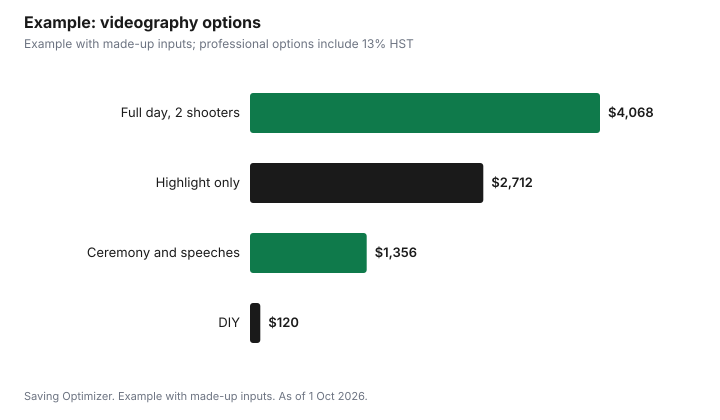

Weddings · Canada
Is a Wedding Videographer Worth It? Costs, Films and Alternatives in Canada

A wedding videographer is worth it if you would rewatch your vows, speeches and first dance, or share them with family who could not attend; if not, a photographer plus a friend recording the ceremony on a phone may be enough. Videography is priced by hours, number of shooters and how much editing you want, from a short highlight film to full ceremony and speeches. Under the Copyright Act, the videographer generally owns the copyright, and the personal-use exception for commissioned photographs does not extend to film, so the contract should spell out how you may use and share the video.
Key takeaways
- Worth it if you value voices, vows and speeches you will rewatch.
- Price drivers: hours, shooters, edit length, audio and drone.
- Highlight film versus full coverage: decide what you will watch.
- Bundles with your photographer can save on coordination and cost.
- Video copyright stays with the videographer unless the contract says otherwise; get usage rights in writing.
- Example with made-up inputs: four options compared.
What videography costs and why
| Driver | Why it matters |
|---|---|
| Hours of coverage | More time on site and more footage to review |
| Number of shooters | Two angles for ceremony and speeches |
| Edit length | A full-length edit takes much longer than a teaser |
| Audio | Microphones on the officiant, couple and speakers |
| Drone | Certified pilot and equipment |
| Travel and lodging | Distance from the videographer's base |
| Raw footage | Some charge to deliver it |
Highlight films versus full coverage
A highlight or short film condenses the day into a few minutes set to music. Full coverage includes the complete ceremony, speeches and first dance, often unedited or lightly edited. Some couples return mostly to the full speeches and vows, while others prefer a polished short film to share. Ask for samples of both from the same videographer, and decide which you would actually watch. Delivering both costs more.
Alternatives
- A friend or relative records the ceremony and speeches on a phone with a tripod and an external microphone.
- Ceremony-only coverage by a professional, then photos only.
- A livestream for remote guests, recorded for later.
- A photographer who also shoots short video clips.
- Guests share clips to a shared album.
DIY recording works best with a stable tripod, a charged phone with storage, a clip-on microphone for the officiant and someone who will not be distracted. Test it at the rehearsal, and ask the officiant whether they are comfortable wearing a microphone. Afterward, copy the files to two places, such as a computer and cloud storage, before anyone deletes them from the phone.
Audio matters most
Shaky footage can be forgiven; missing audio cannot be fixed later. Whether you hire a professional or film it yourself, plan how vows, readings and speeches will be recorded. Professionals often place small recorders or clip-on microphones on the officiant and one partner and take a feed from the venue's sound system or DJ. For DIY, a clip-on microphone that records to a phone, placed on the officiant, is a low-cost fix. Ask speakers to hold the microphone close and to face the room, and avoid scheduling speeches next to a noisy kitchen or bar.
Livestreaming
A livestream lets relatives who cannot travel watch the ceremony live. You need a stable internet connection at the venue, a device on a tripod, power and a person to start and monitor the stream. Test the connection at the venue ahead of time, at the same time of day, and share the link and time zone with remote guests in advance. Record the stream so you have a copy. Ask the venue whether it allows streaming and whether its Wi-Fi can handle it, or bring a mobile hotspot as a backup.
Bundles with photographers
Some studios offer photo and video packages. Bundling can lower the combined price and means the two teams are used to working together, so they do not block each other's shots. Compare the bundle with separate quotes, and check that each part meets your standards; a strong photographer's studio may not offer equally strong video.
Rights, music and usage
Section 13 of the Copyright Act makes the author of a work the first owner of copyright, so the videographer generally owns the film unless the contract transfers ownership. The personal-use exception in section 32.2 covers photographs and portraits commissioned for personal purposes, not films, so your contract should state how you may copy, share and post the video. Ask how the videographer licenses music used in your film, whether you can post it publicly, and whether they will use it in their own marketing.
Drones
Transport Canada requires drones weighing 250 grams or more to be registered and marked, and the pilot must carry a valid pilot certificate. Under basic operations, the drone must stay at least 30 metres horizontally from people; flying closer or over guests requires an advanced certificate and a drone with the required safety features. Ask for the pilot's certificate type and confirm the venue allows drones.
Contracts
- Hours, number of shooters and what is filmed.
- Final deliverables, lengths and delivery date.
- Number of revisions included.
- Music licensing and posting rights.
- Raw footage availability and cost.
- Deposit, payment schedule, cancellation and illness backup.
- Overtime rate and meal requirements.
Decision guide
| If you... | Consider |
|---|---|
| Want to rewatch vows and speeches | Full ceremony and speeches coverage |
| Want something to share online | Highlight film |
| Have a tight budget | Friend with a phone or ceremony-only |
| Have many remote guests | Livestream plus recording |
| Already book a studio for photos | Compare its bundle |
Example with made-up inputs
These numbers are an example with made-up inputs. Option A, full-day videography with two shooters and a highlight film plus full ceremony and speeches: $3,600. Option B, eight hours, one shooter, highlight film only: $2,400. Option C, ceremony and speeches only, lightly edited: $1,200. Option D, DIY with a tripod and clip-on microphone: $120. With 13% HST on the professional options: $4,068, $2,712 and $1,356.
| Option | Before tax | With 13% HST |
|---|---|---|
| A: Full day, two shooters, two edits | $3,600 | $4,068 |
| B: 8 hours, one shooter, highlight | $2,400 | $2,712 |
| C: Ceremony and speeches only | $1,200 | $1,356 |
| D: DIY tripod and microphone | $120 | $120 (equipment) |

Steps
- Decide what footage you would rewatch.
- Ask for full sample films, not only trailers.
- Compare bundles with separate quotes.
- Read the contract for rights, music and delivery.
- Confirm drone certification if offered.
- If DIY, assign a person and test the setup.
Common mistakes
- Paying for a long film you will not watch.
- Assuming you can post the video anywhere.
- No microphone on the officiant, so vows are inaudible.
- Not checking delivery dates.
- Leaving DIY recording to a guest who is also in the wedding party.
Related: wedding photographer costs and vendor contracts.
Sources
- Copyright Act, R.S.C. 1985, c. C-42, sections 13 and 32.2, laws-lois.justice.gc.ca, as of 1 Oct 2026.
- Transport Canada, Flying your drone safely and legally; Drone operation categories: Basic operations, tc.canada.ca, as of 1 Oct 2026.
- Canada Revenue Agency, GST/HST rates, canada.ca, as of 1 Oct 2026.
- Package prices and equipment costs in the example are made-up inputs.
Frequently asked questions
Is a wedding videographer worth the money?
It is if you will rewatch vows and speeches or share them with absent family. Otherwise, a DIY recording may be enough.
Who owns the copyright in a wedding video?
Under the Copyright Act, the author, usually the videographer, is the first owner unless the contract transfers it.
Can I post my wedding video online?
Check your contract. The personal-use exception for commissioned photos does not cover films, and music licensing matters.
What is the difference between a highlight film and full coverage?
A highlight film is a short edit set to music; full coverage includes the full ceremony and speeches.
Can a friend film our wedding instead?
Yes. Use a tripod, a clip-on microphone for the officiant and a person who is not in the wedding party.
Does a drone videographer need certification?
Yes, for drones of 250 g or more: registration and a Transport Canada pilot certificate.
Researched and drafted with AI assistance and fact-checked against official Canadian sources. How we create content.
Disclosure: Saving Optimizer may earn a commission if a partner link is added later. No partnership is claimed on this page. Education only.